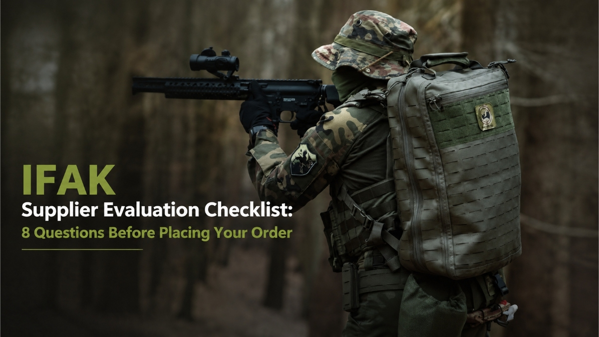

IFAK Supplier Evaluation Checklist: 8 Questions Before Placing Your Order
AUG 07, 2026

A Practical Sourcing Guide Based on Real Procurement Challenges in Trauma Kit Selection
When a buyer starts sourcing an IFAK, the first question is often simple:
"Can you provide your price?"
It is a normal question.
After all, every distributor needs to understand cost before moving forward.
However, in the trauma kit market, price comparison can sometimes become misleading.
Why?
Because two products can have:
- similar pouch designs,
- similar names,
- similar item counts,
but completely different emergency response capabilities.
A compact IFAK with basic wound care supplies and a trauma-focused IFAK designed around bleeding control are not necessarily competing products.
They may be designed for completely different users.
For distributors, outdoor brands, PPE suppliers, and professional safety companies, choosing an IFAK supplier is not only about finding a quotation.
It is about reducing procurement risks before placing the order.
Based on our experience communicating with buyers from different markets, here are eight questions worth asking before selecting an IFAK supplier.
1. Are You Comparing Products, or Comparing Trauma Response Capability?
This is usually the first question buyers should ask.
In many markets, suppliers use similar terms:
- IFAK
- Tactical First Aid Kit
- Trauma Kit
- Emergency Kit
However, the internal configuration can vary significantly.
For example, a trauma-oriented IFAK may prioritize components such as:
- Tourniquet
- Emergency Bandage
- Compressed Gauze
- Chest Seal
because these components support immediate trauma response situations.
A basic first aid pouch may contain many useful items, but it may be designed mainly for:
- minor wounds
- general first aid
- everyday injuries
Neither product is necessarily wrong.
The important question is:
Does the configuration match the emergency scenarios your customers expect to handle?
For procurement teams, this difference is often more important than the number of items inside the pouch.
2. Does the Supplier Understand Your Target Market?
An IFAK suitable for one market may not be the right solution for another.
For example:
An outdoor retailer may focus on:
- compact size
- portability
- essential bleeding control capability
An expedition company may require:
- stronger trauma response capability
- remote environment preparedness
- longer evacuation considerations
An industrial safety distributor may focus on:
- workplace injury risks
- emergency response requirements
- safety program compatibility
A supplier who understands these differences can help buyers avoid selecting a product that is technically suitable but commercially unsuitable.
3. Can the Supplier Explain Why Each Component Is Included?
A professional trauma kit is not simply a collection of medical items.
Every component should have a purpose.
For example:
A tourniquet is not included because it makes an IFAK look more professional.
It exists because severe extremity bleeding requires rapid intervention when direct pressure may not be sufficient.
A chest seal is not included because it increases the item count.
It exists because certain chest injuries require different emergency considerations before professional medical care is available.
Compressed gauze is not just "another dressing".
It supports bleeding management in situations where pressure application and wound packing may be required.
When evaluating an IFAK manufacturer, buyers should look for suppliers who can explain the role behind the configuration.
4. Is the Configuration Designed for Your Customer, or Just Built Around Available Components?
This is an important difference between product sourcing and solution sourcing.
A common mistake in the market is creating an IFAK by selecting available components first and then finding a customer afterward.
However, professional buyers usually need the opposite approach:
Start with the application.
Then define the configuration.
For example:
- Outdoor users may need lightweight trauma preparedness.
- Professional guides may need expanded response capability.
- Industrial users may require broader emergency management functions.
The best IFAK supplier should help connect:
customer risk → product configuration → market application
5. Can the Supplier Maintain Configuration Consistency for Repeat Orders?
For distributors, the first order is only the beginning.
A supplier relationship needs to support future growth.
Important questions include:
- Will the same components be available for repeat orders?
- Are product specifications controlled?
- Can the supplier maintain the agreed configuration over time?
A small change inside a trauma kit may affect:
- product positioning,
- customer expectations,
- documentation,
- resale communication.
Consistency is especially important for companies building a long-term safety product portfolio.
6. Can the Supplier Support Customization Without Increasing Unnecessary Complexity?
Many distributors and brands consider:
- private labeling
- packaging customization
- logo printing
- market-specific configurations
However, customization should solve a business problem.
It should not create unnecessary complexity.
A capable IFAK supplier should help buyers understand:
- which customization options add market value,
- which changes increase cost without improving usability,
- what production requirements should be considered before ordering.
The goal is not simply to create a customized product.
The goal is to create a product that works commercially.
7. Can the Supplier Support Documentation and Compliance Requirements?
For professional buyers, documentation is part of supplier evaluation.
Different markets and applications may require different levels of support.
Depending on the product and destination market, buyers may need:
- product specifications
- material information
- quality documentation
- applicable certificates
For PPE distributors, industrial safety suppliers, and institutional buyers, documentation support helps reduce risks during:
- customer evaluation,
- import procedures,
- tender preparation,
- internal approval processes.
8. Are You Buying a Product, or Building a Product Line?
This may be the most important question.
Many buyers initially look for a single SKU.
But successful distributors usually think further:
- Does this product fit my market?
- Can I explain the value to my customers?
- Does the supplier understand my business direction?
- Can this become part of a long-term product portfolio?
A good IFAK supplier does not only provide a product.
They help partners make better sourcing decisions.
How GoSafeMed Approaches IFAK Supply
At GoSafeMed, we believe trauma kit sourcing should begin with understanding the application, not simply comparing quotations.
Our approach focuses on:
- application-based IFAK configurations,
- outdoor safety solutions,
- professional trauma kits,
- industrial safety requirements.
We work with distributors and brands that need more than a standard pouch.
Because a successful safety product is not only about what is inside the package.
It is about whether the configuration solves the right problem for the right market.
Final Thoughts
Before placing an IFAK order, professional buyers should look beyond:
- price,
- item count,
- packaging appearance.
The more important questions are:
- Is the configuration suitable?
- Does the supplier understand the market?
- Can the supplier support long-term cooperation?
The right IFAK supplier does not simply help you purchase a product.
They help you reduce uncertainty before the product reaches your customer.